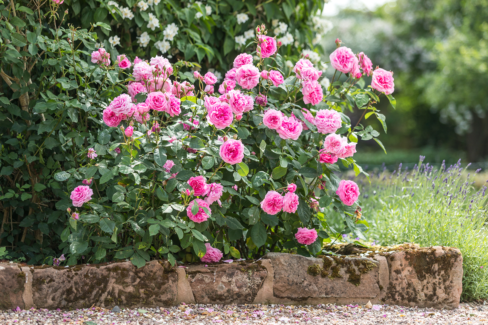

DISCOVER DAVID AUSTIN
GET YOUR NEW DAVID AUSTIN HANDBOOK OF ROSES 2019/2020
Request a free copy of our traditional rose catalogue , which has been the bedside companion of rose lovers for decades and is a useful tool to help plan your garden. It is packed with tips and advice, as well as detailed descriptions of 800 varieties of roses, including Old Roses , climbing roses, rambling roses and 150 of David Austin’s wonderfully fragrant, repeat-flowering English Roses.a
WELCOME TO DAVID AUSTIN ROSES
In the 1940s, when still just a teenager, David Austin was already fascinated with roses. Soon after, his hobby became his life. He released his first rose, ‘Constance Spry’, in 1961. Since then, he has released over 200 new roses, creating an unrivalled collection, beloved throughout the world. 75 years on, his objective remains the same – to create a more beautiful rose.
All David Austin roses have a collective style and reflect one man’s vision. All have beautiful blooms and in most cases, wonderful fragrance held on graceful attractive shrubs. A garden of these outstanding roses is hard to beat for the sheer exuberance of flower and fragrance.
Today, David Austin Roses remains a family business. David Austin has been joined by his son David and his grandson, Richard.
REPEAT FLOWERING
All of the roses listed here are repeat-flowering, which means they flower in flushes providing colour and interest in the border over several months. Nearly all modern roses, including David Austin’s English Roses, are repeat-flowering. To encourage repeat-flowering, dead-head your roses, either by removing just the dead flowers or cutting the stems down to the first full leaf. Dead-heading also helps maintain a tidier plant.
SHOP ONLINE
- CLAIRE AUSTIN
- HARLOW CARR
- MALVERN HILLS
- MORTIMER SACKLER
- OLIVIA ROSE AUSTIN
- PRINCESS ANNE
- ROALD DAHL
- EMILY BRONTË
- CHARLES DARWIN
- FRANCIS E. LESTER
- LADY OF SHALOTT
- SUSAN WILLIAMS-ELLIS
- THE LARK ASCENDING
- TOTTERING-BY-GENTLY
- GHISLAINE DE FÉLIGONDE